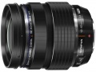

器材库 > APS画幅镜头 > M.ZD ED 12-40/2.8 PRO

详细规格
镜头类型
标准变焦镜头
发布日期
2013-09-10
厂家推荐价格
112,350.00 （日元）
焦距
12mm-40mm
等效35mm画幅焦距
24mm-80mm
最大光圈
f/2.8
最小光圈
f/22
视角（对角）
84° - 30°
镜头结构
14片/9组
非球面镜片
2片
低/超低色散镜片
2片
光圈叶片
7片
最近对焦距离
20cm
最大放大倍率
0.3倍
驱动马达
MSC
滤镜口径
62mm
镜头卡口
Micro 4/3
防抖
否
颜色
黑色
尺寸
69.9×84mm
重量
382g
窗外红尘2014-04-03 09:194.58 分
操作性 5.00耐用性 4.50性价比 4.50解像力 4.50色彩还原 4.50机械结构 4.50